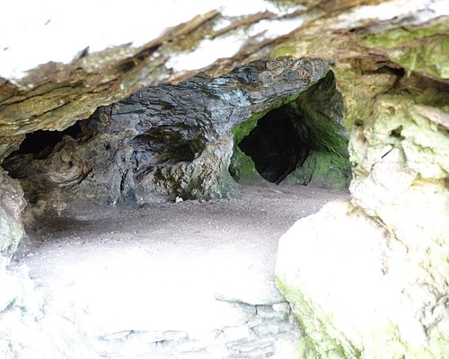
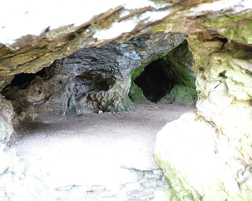

.png)
The Sabaragamuwa Province is one of the nine provinces of Sri Lanka, the first level administrative division of the country. The provinces have existed since the 19th century but did not have any legal status until 1987 when the 13th Amendment to the Constitution of Sri Lanka established provincial councils.Sabaragamuwa is yet another province of Sri Lanka, located in the south-central region of the island and is comprised of two administrative districts: Ratnapura and Kegalle. Sabaragamuwa is named after its former indigenous inhabitants, namely the Sabara, an Indic term for hunter gatherer tribes, a term seldom used in ancient Sri Lanka. The province is well known for its gem industry, particularly the Ratnapura District. Apart from gem industry, the province is known for rice and fruit cultivations and rubber plantations. In the province are also tourist attractions such as the Sinharaja Forest Reserve, Udawalawa National Park, Kitulgala, and Adam’s Peak etc. The capital of the province is Ratnapura, the name means `city of gems’, a city most known for the long established gem industry in Sri Lanka. Most of the people of the town depend on the gem trade. Gem pits are a common site in the surrounding area. Most of the large-scale gem businessmen operate from Ratnapura. There are a considerable number of foreign gem traders too operating in the town. Rice cultivation is presently facing an uncertain future in Ratnapura because many farmers are giving up rice cultivation and switching to gem mining which is a more productive way of earning money. Many delicious fruits like mango and papaya and also vegetables are grown as market products.
 
